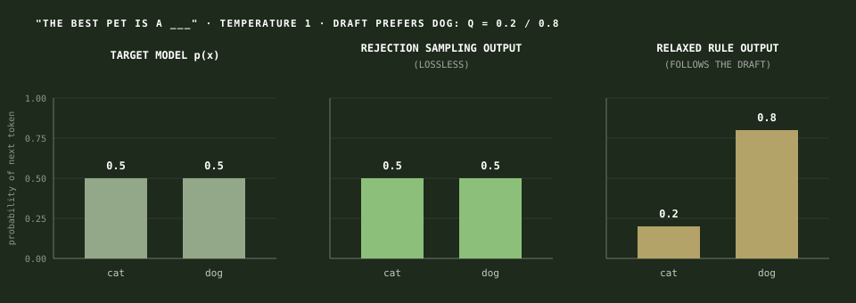
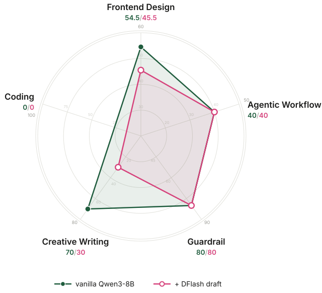
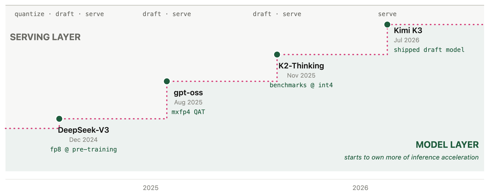

Speculative Decoding: What Lossless Means, What It Doesn't, and How to Test It
Introduction
What is speculative decoding? Introduced in 2023, speculative decoding decouples draft generation from target verification (Leviathan et al., 2023): a draft mechanism proposes tokens, and a verification mechanism accepts or rejects them. The verified output has the same distribution as the target model (Chen et al., 2023), which is why speculative decoding is lossless.
Why is it faster than the vanilla model decoding? The vanilla LLM is autoregressive: it decodes one token at a time. To produce n tokens, the original model runs n forward passes. With speculative decoding, a small draft model guesses the next γ tokens (typically 3 to 8), and the target model checks all γ of them in a single forward pass, which costs about the same as decoding one token. Speed comes from both sides: better drafts get accepted more often, and smarter verification wastes less compute on bad drafts.
Today, speculative decoding runs under nearly every hosted LLM, and agent workflows chain dozens of model calls per task, so the cost of decoding is paid many times over. Frontier labs lean on it in production: OpenAI cut GPT-5.6 Luna prices by 80% in 2026 and credited the cut partly to a redesigned draft model (OpenAI, 2026), Anthropic's fast mode serves the same Claude Opus model up to 2.5x faster at a premium rate (Anthropic, 2026), DeepSeek ships DSpark in its serving engine for a 51% throughput gain (DeepSeek, 2026), and Kimi K3 ships with its own draft model (Kimi Team, 2026). It is a cornerstone topic to learn in the LLM stack.
In this teaching material, we have designed content progressively. Each section builds on the previous one:
- What lossless means. How does speculative decoding work? Why is it lossless in theory?
- What it doesn't mean. Introducing Losslessbench to test beyond the math and coding domains, with a hands-on lab to reproduce every number yourself.
- What's next? What are the exciting new directions in accelerated inference?
1. What lossless means
What does lossless acceleration mean for an LLM? Serving Qwen3-8B on one B200, SGLang, the vanilla model decodes about 230 tokens per second; the first Harry Potter novel is roughly 100,000 tokens, more than seven minutes of decoding. With a DFlash draft model, conversational text decodes about 2.75x faster (Chen et al., 2026), ~630 tokens per second, cutting it under 3 minutes. See the Figure 1 comparison.
time -> 0s 1s 2s 3s 4s 5s 6s 7s 8s 9s
+-+-------+-------+-------+-------+-------+-------+-------+-------+-------+-------+-------+--+
VANILLA |It|does|not|do|to|dwell|on|dreams|and|forget|to|live| 9.0s
+-+-------+-------+-------+-------+-------+-------+-------+-------+-------+-------+-------+--+
+------------------------+--------------------------------+
SPECULATIVE |It does not do to dwell |on dreams and forget to live| 3.3s
+------------------------+--------------------------------+How much faster exactly, and how do we measure it? Table 1 defines the six metrics. Three of them are deciding factors: drafting time, verification time, and acceptance length. The other three, decoding speedup, per-token latency, and tokens per second, are computed from these three factors.
| Metric | Definition | Determined by |
|---|---|---|
| Decoding speedup (η) | η = L_target / L, relative speed over the autoregressive baseline | Per-token latency L and the baseline latency L_target |
| Per-token latency (L) | L = (T_draft + T_verify) / τ, the absolute time per generated token | T_draft, T_verify, and acceptance length τ |
| T_draft | The time the draft model spends proposing tokens | The draft model's size plus how many draft tokens are needed: the smaller it is, the faster it drafts |
| T_verify | The time the target model spends checking the proposed tokens | The target model's size, and how many draft tokens are verified |
| Tokens per second | ≈ 1 / L, the throughput the user feels | Per-token latency L |
| Acceptance length (τ) | The average number of draft tokens accepted per verification pass | How well the draft imitates the target: the closer its guesses, the more tokens survive verification |
Below is a math walk-through of achieving 2.3x decoding speedup.
T_verify = 4.3 ms # one target forward pass (Qwen3-8B at 230 tok/s ≈ 4.3 ms/token) T_draft = 1.3 ms # drafting cost τ = 3 tokens # accepted per verification pass L = (1.3 ms + 4.3 ms) / 3 ≈ 1.9 ms per token # per-token latency η = 4.3 ms / 1.9 ms ≈ 2.3x # speedup: 2.3x
The above wraps up the measurement of speculative decoding speed. But how is it lossless in theory? How does it work exactly? The answer is the verification step. The target model checks every draft token against its own probabilities and accepts or rejects each one, a rule called rejection sampling. The output follows the target model's own distribution. Here is how rejection sampling works in pseudocode:
# p(x): target model's probability for token x
# q(x): draft model's probability for token x
for each draft token x:
accept x with probability
min(1, p(x) / q(x))
# q(x) <= p(x): always accepted
# q(x) > p(x): accepted with probability p(x)/q(x)
on the first rejection:
discard the remaining draft tokens
resample one token from the residual
p′(x) = norm( max(0, p(x) - q(x)) )
This below shows why the output distribution is unchanged with drafting and verification. A token can be emitted in two ways: accepted directly from the draft, which is the accepted mass, or resampled by the target after a rejection, which is the residual mass. The two add up to the same as the target's probability:
P(x is emitted) = q(x) * min(1, p(x)/q(x)) # accepted mass = min(p(x), q(x))
+ P(reject) * p′(x) # residual mass = max(0, p(x) - q(x))
= min(p(x), q(x)) + max(0, p(x) - q(x))
= p(x) # same as the target's probability
To summarize, speculative decoding speed comes down to three factors: (1) drafting time, (2) verification time, and (3) acceptance length. In the following section, we'll go through the state-of-the-art of model architectures and how each model improves these deciding factors.
1.1 EAGLE-3 (2025) – longer acceptance length
The 2023 papers use a separate small LLM as the draft. It guesses from scratch, and hosting a second model costs memory. Medusa (Cai et al., 2024) replaced it with extra prediction heads on the target; EAGLE (Li et al., 2024) replaced the heads with a single decoder layer that reads the target's hidden features and drafts autoregressively. We highlight EAGLE-3 because it is what ships in production.
Earlier EAGLE models do not improve acceptance length with more training data. This is because the draft layer was trained to predict the target's next hidden feature as well as the next token. This training objective forced the model to reproduce the target's exact feature vectors; as a result, the draft spends its capacity copying features instead of guessing token betters.
EAGLE-3 (Li et al., 2025) addresses this with a less-is-more training objective: it drops feature prediction and predicts the token directly, with features fused from low, middle, and high target layers instead of the top layer only. However, this introduces a new problem: at inference, the draft consumes its own outputs, which drift away from the training distribution, and acceptance collapses from the second step on. EAGLE-3 fixes this with training-time test: during training, the draft unrolls several steps and consumes its own outputs, so the distribution it trains on is the distribution it sees at inference.
VANILLA SPEC DECODING (2023) EAGLE-3
+------------+ +- Target model ----------------+
| Draft LLM guesses from scratch | low -> |
| (separate ---> [draft tokens] | mid ---> Fuse -> Draft |
| small | high -> Layer |
| model) | | |
+------------+ | Target LM Head |
v | | |
[Target verifies] | [draft tokens] |
+-------------------------------+
draft reuses target features
TRAINING-TIME TEST
+----------------------------------------------------------------------+
| without: training teaches step 1 only. |
| at step 2 the draft consumes its own step-1 output, |
| a distribution it never saw -> acceptance collapses |
| [t1 ok] [t2 x] [t3 x] ... |
| |
| with: during training the draft unrolls several steps and |
| consumes its own outputs -> training distribution = |
| inference distribution -> more data, longer acceptance |
| [t1 ok] [t2 ok] [t3 ok] ... |
+----------------------------------------------------------------------+The result is a longer acceptance length in EAGLE-3. It has a speedup of up to 6.5x over vanilla decoding, about 1.4x over EAGLE-2, and it is one of the most widely adopted draft models in production frameworks, with native support in both SGLang and vLLM.
But one bottleneck remains: the draft layer proposes tokens one at a time, so drafting itself is still sequential.
1.2 DFlash (2026) – shorter drafting time
The key design choice of DFlash (Chen et al., 2026) is to make drafting parallel: the whole block at once, instead of token by token. The draft is a lightweight block diffusion model: it predicts an entire block of tokens in a single forward pass, conditioned on context features extracted from the target model.
EAGLE-3 draft (serial) DFLASH draft (parallel)
t1 -> t2 -> t3 -> t4 [anchor|MASK|MASK|MASK]
(one at a time, 4 rounds) | 1 forward pass
[t1 |t2 |t3 |t4 ]
target features: wait each step target features: injected once per blockAs a result, DFlash cuts drafting time. This removes autoregressive drafting as the bottleneck: over 6x lossless acceleration across a range of models and tasks, up to 2.5x higher speedup than EAGLE-3.
However, parallelism introduces its own cost: the block positions are predicted independently, so draft tokens cannot see each other, and acceptance decays toward the end of the block.
1.3 DeepSeek DSpark (2026) – shorter verification time
Unlike the previous models that optimize the draft mechanism, DSpark (DeepSeek, 2026) optimizes the verification mechanism: verify only the draft tokens that are worth it. DSpark keeps the parallel draft backbone and adds two modules.
- A lightweight sequential head restores dependencies inside the block, so later positions can condition on earlier ones.
- A confidence head estimates how likely each draft prefix is to survive verification, and a load-aware scheduler sets the verification length per request, based on the estimated survival probability and the engine's throughput profile.
DFLASH draft DSPARK draft
[t1|t2|t3|t4|t5] [t1|t2|t3|t4|t5] <- sequential head: positions chained
all sent to verify c: .9 .8 .7 .3 .2 <- confidence head scores
[t1|t2|t3] t4 t5 <- low-score tail dropped, saves
verification capacityConsequently, DSpark cuts verification time. Offline, DSpark improves accepted length by 16–31% over state-of-the-art drafters. Deployed in the DeepSeek-V4 production serving stack, it accelerates per-user generation by 60–85% at matched throughput over the MTP-1 production baseline (DeepSeek, 2026). DeepSeek open-sourced the DSpark checkpoints together with DeepSpec, an open-source training repository for speculative decoding.
DSpark cuts verification time, and keeps DFlash's parallel drafting. What about acceptance length? Positions in the block are still predicted independently, so the decay problem at the end of long blocks still remains.
1.4 DFlash 2 (2026) – longer acceptance length
DFlash 2 (Inco, 2026) addresses this decay on the draft side, with two additions to the DFlash architecture. A lightweight path selector scores adjacent token pairs and picks a coherent sequence through the top candidates at each position, instead of taking independent top-1 predictions. Two-tap local convolutions in the backbone strengthen dependencies within the block, reducing the accuracy drop toward block ends.
independent top-1 (DFlash) PATH SELECTION (DFlash 2)
pos: 1 2 3 4 pos: 1 2 3 4
[a] [x] [c] [d] [a]--[b] [c] [d]
\_[x]--[c]--[d] <- adjacent pairs
scored,
each position picks alone, one coherent path chosen
the sequence may not connect
acceptance acceptance
|~~~~\__ <- tail sags |~~~~~~~\_ <- local conv lifts the tail
+--------- pos +--------- posAs we can tell, DFlash 2 raises acceptance length. The two additions produce 21% more output per verification pass than DFlash, at 1.3% added latency, and 2.7x to 3.4x throughput over autoregressive decoding on Qwen3.8-27B (Inco, 2026).
Note that DFlash 2 argues drafting should stay parallel: it replaces DSpark's sequential head with a parallel selector. After going through the evolution of these four architectures, do you have a new speculative decoding idea that could win the next SOTA number?
1.5 Case study: the decoding race
With all 5 models introduced, the race can now run in full comparison. See Figure 6. All 5 models decode the same sentence on the same target model.
time -> 0s 1s 2s 3s 4s 5s 6s 7s 8s 9s
VANILLA |It|does|not|do|to|dwell|on|dreams|and|forget|to|live| 9.0s 230 tok/s
EAGLE-3 |It does not|do to dwell|on dreams and|forget to live| 5.5s ~375 tok/s τ 2.66
DFLASH |It does not do to dwell on dreams and forget to live| 3.3s ~630 tok/s τ 3.11
DSPARK |It does not do to dwell on dreams|and forget to live| (speed to be measured) τ 3.72
DFLASH 2 |It does not do to dwell on dreams and forget to live| (to be measured)| Method | τ | Speedup | Engines | Official drafters |
|---|---|---|---|---|
| EAGLE-3 | 2.66 | 6.5x | SGLang, vLLM | Llama, Qwen, DeepSeek V3, Kimi K2.5 |
| DFlash | 3.11 | >6x | SGLang, vLLM, TRT-LLM, llama.cpp | Meta, Poolside, NVIDIA, Xiaomi |
| DSpark | 3.72 | 60–85% vs MTP-1 | DeepSeek-V4 stack | GLM-5.2, Kimi K3 (RedHat) |
| DFlash 2 | (to be measured) | 2.7–3.4x | SGLang, vLLM, llama.cpp, Ollama | Qwen3.8-27B, Muse Glimmer |
All four models are in production today. Since March 2025, EAGLE-3 draft heads ship for Llama, Qwen, and DeepSeek V3. By spring 2026, DFlash was integrated into SGLang, vLLM, TensorRT-LLM, and llama.cpp, and NVIDIA reported up to 15x throughput with it on Blackwell GPUs (NVIDIA, 2026). DFlash alone has been downloaded more than 3.5 million times in seven months. By mid-2026, model builders release official drafters alongside the models themselves: Meta, Poolside, and NVIDIA for DFlash (Inco, 2026), Red Hat for DSpark (RedHatAI, 2026), and in July 2026, Kimi K3 shipped with its own speculator, trained during post-training (Kimi Team, 2026). See Table 2.
So far we have covered what lossless means. In the next section, we will discuss what lossless does not mean.
2. What it doesn't mean
Section 1 proved lossless in theory: verification ensures the output distribution is aligned with the target model's. But when does it hold or not hold? In this section we go through the boundary of that guarantee: (2.1) what lossless doesn't mean in papers, (2.2) speculative decoding in production, and (2.3) a case study, LosslessBench, which measures losslessness on domains beyond math and coding.
2.1 What lossless doesn't mean in papers
Even in the original papers, lossless is not unconditional. EAGLE-3 compares against Medusa only at temperature 0 but the relaxed acceptance variant drops the lossless guarantee. This is because a method like Medusa is lossless depending on the temperature and on how strict the acceptance rule is:
- At temperature 0, decoding is deterministic: the target model selects its highest-probability next token, a draft token is accepted only when it matches, and it's lossless.
- At temperature 1, decoding is random: one position can have multiple valid answers. A method like Medusa accepts any draft tokens that clear a target probability threshold, so the mix of answers follows the draft's preference instead of the target's. The output distribution shifts and is no longer lossless (Cai et al., 2024).
Taking a prompt with two valid continuations: "The best pet is a ___". Say the target model assigns cat 0.5 and dog 0.5, and the draft model prefers dog:
- Rejection sampling: the draft proposes dog 80% of the time, but the target accepts only 5 out of 8 dog proposals (p/q = 0.5/0.8) and resamples the rest, so dog still comes out 50% of the time.
- A relaxed rule: every dog proposal that clears the threshold is accepted, so the output is biased toward the draft's favorite: the best pet becomes a dog with 0.8 probability. See Figure 7.

Lossless also depends on how verification is scheduled. A poorly designed scheduler introduces selection bias. The acceptance rate improves while the output distribution has already shifted. This makes the inference no longer lossless. To be more specific, the scheduler decides whether draft token k gets verified, and that decision must depend on only the prefix through 1 to k-1. If the draft proposes token A at position k, followed by token B at position k+1, the scheduler cannot use B to decide whether to verify A. (See the Figure 8 example.)
NON-ANTICIPATING (lossless) PEEKING SCHEDULER (selection bias)
draft: [t1]..[tk-1] [tk] [tk+1] draft: [t1]..[tk-1] [tk] [tk+1]
| ? | ? |
verify tk? ---+ verify tk? ---+ |
uses prefix 1..k-1 only ... but also the score of tk+1,
which was computed FROM tk
decision independent of tk admission of tk depends on tk itself
=> output distribution preserved => output distribution shiftsDSpark (DeepSeek, 2026) almost violated this non-anticipating rule. All prior methods rely on this precondition for their lossless claim to hold, but none of them tested whether the proof still holds when the precondition changes:
- The precondition. As noted above, lossless speculative decoding requires non-anticipating admission: deciding whether to verify position k may use only the prefix through 1 to k - 1.
- What's wrong in DSpark's scheduler. DSpark's scheduler ranks candidate draft tokens by their estimated probability of passing verification, then admits them one at a time while updating expected throughput. Scoring token k+1 from the preceding token k is ordinary. The problem arises because DSpark schedules the whole draft block jointly: its decision to admit token k can depend on the score of token k+1, and that score was computed from the proposed token k. The admission decision for k thus indirectly depends on k itself, violating non-anticipating admission, which the paper calls selection bias (Section 3.2.2, counterexample in Appendix A).
- DSpark's fix. DSpark stops the search as soon as expected throughput declines. This makes the truncation decision depend only on the prefix processed so far, eliminating the selection bias.
Algorithmic losslessness holds only with careful handling: a relaxed acceptance rule or a peeking scheduler shifts the output distribution, and DSpark caught its own case. We need to be more careful when deploying the spec models. So in deployment, what else does the lossless guarantee depend on?
2.2 Lossless in deployment
In production, there are many configurations a user or company can adjust, and some of them affect the lossless guarantee. vLLM and SGLang, the two major engines, put it this way:
- SGLang keeps strict verification as the default: its acceptance thresholds ship at 1.0 (SGLang docs). A user can lower them to accept more tokens aggressively, and once they trade quality for speed this way, lossless is no longer guaranteed.
- vLLM splits losslessness into three layers (vLLM docs): (1) theoretical losslessness holds up to the precision limits of hardware numerics; (2) algorithmic losslessness is validated by convergence tests on the rejection sampler; (3) output stability is not guaranteed. Layers 1 and 2 are covered by the paper's proof and the engine's tests, but layer 3 is not: a simple change in batch size can change logprobs, shifting the output distribution.
DSpark is a concrete example. When DeepSeek deployed it in production, the scheduler exposed two conflicts with real-world infrastructure (DeepSeek, 2026, Section 5.2), and they had to redesign around both to keep the lossless guarantee:
- The algorithm assumes a smooth hardware capacity curve, but real GPU throughput is jagged. The fix is removing the early stop and searching over the whole jagged curve.
- The algorithm decides how many draft tokens to verify at each step, but the serving engine needs the batch size to be fixed. The fix is scheduling asynchronously, using confidence predictions from two steps earlier to set the batch size. This also keeps the decision from seeing the current tokens, so the wider search in the first fix stays lossless.
Lastly, the production stack is complicated: it accelerates inference well beyond speculative decoding. Weights are quantized (lossy). KV caches are compressed (lossy). The serving system adds KV-cache-aware routing and prefill-decode disaggregation on top. With this many factors stacked together, whether the deployment as a whole is still lossless is hard to gauge.
Suppose a deployment gets everything above right: strict thresholds, a non-anticipating scheduler, a redesign for every engine constraint. How do we verify it still serves the end user's goal across all the different domains? Evidence for losslessness is limited to the domains where it was tested.
The state-of-the-art speculative decoding methods are all evaluated on: coding, chat, and mathematics. EAGLE-3, DFlash, and DSpark report acceptance length and speedup on GSM8K, MATH-500, AIME25, HumanEval, MBPP, LiveCodeBench, MT-Bench, Alpaca, and Arena-Hard. DeepSpec uses the same nine benchmarks (Table 3). These benchmarks cover only a small slice of real-world tasks. Outside them, the empirical evidence for losslessness is simply absent. Figure 9 shows the 29 task types in OpenRouter's real traffic (OpenRouter, 2026): the tested domains account for only 17% of token usage, and the other 83% has never been measured.
| Method | Math | Code | Chat / instruction | Other |
|---|---|---|---|---|
| EAGLE-3 (2025) | GSM8K | HumanEval | MT-Bench, Alpaca | CNN/Daily Mail (summarization) |
| DFlash (2026) | GSM8K, MATH-500, AIME25 | HumanEval, MBPP, LiveCodeBench | MT-Bench, Alpaca | — |
| DSpark (2026) | GSM8K, MATH-500, AIME25 | HumanEval, MBPP, LiveCodeBench | MT-Bench, Alpaca, Arena-Hard | DeepSeek-V4 live traffic (speed only) |
| DeepSpec harness | gsm8k, math500, aime25 | humaneval, mbpp, livecodebench | mt-bench, alpaca, arena-hard-v2 | — |
OPENROUTER TRAFFIC BY TASK TYPE (29 task types, share of token usage)
+---------------------+------------------------------------------------+
| TESTED BY SPEC | NEVER MEASURED 83% |
| PAPERS 17% | |
| | frontend / UI marketing legal |
| coding math | creative writing translation roleplay |
| chat / instruction | agent workflows medical data extract |
| | ...and 19 more task types |
+---------------------+------------------------------------------------+So does lossless hold on the 83% domains/tasks that have never been measured?
2.3 Introducing Lossless Bench
The previous sections covered theoretical and algorithmic losslessness. To measure speculative decoding and inference acceleration on domains beyond coding and math, we built the LosslessBench.
LosslessBench evaluates across five domains: coding, agent workflows, creative writing, guardrails, and frontend design. See Figure 10, each axis uses its domain's own benchmark and metric:
- Frontend: OpenDesign. Each page is judged twice: a GPT-4o vision judge scores the rendered screenshot on alignment, aesthetics, and structure, and a browser agent clicks every component to score whether the page actually works.
- Creative: EQ-Bench longform score, judged over multi-chapter creative writing.
- Guardrail: XSTest, classification accuracy on safe vs unsafe prompts built to sit near the decision boundary.
- Coding: Terminal-Bench pass rate.
- Agent workflow: tau-bench long-horizon agent tasks, action match rate.

The agentic workflow (tau-bench) produced the most surprising result: DFlash beat the base model. This is counterintuitive, because you would expect the accelerated model to lose precision, not perform better on the more complicated agentic tasks. So we looked into the agent traces: the two models behave differently in the loop, and that behavioral difference decides the final result:
| behavior | vanilla Qwen3-8B | + DFlash draft |
|---|---|---|
| conversation | wraps early, premature submission | stays in the loop until something is executed |
| information gathering | skips lookups and answers from assumption | verifies with tool calls before acting |
| the final write action | discusses the exchange, ends without executing it | executes it, sometimes more than once |
| typical failure | task left unfinished | over-acting, duplicate writes corrupt the state |
Table 5. How the two models behave in the agentic loop (tau-bench).
The environment rewards a completed transaction, so the model that gives up early loses tasks it could have finished, while the model that over-acts still completes some of them. Browse the agent traces yourself: every conversation, tool call, and scoring check for all 10 retail tasks, both models.
Explore the evaluations yourself: pick any frontend tasks and compare the two models side by side, with judge rubric. The other domains are browsable too: the full agent traces with scoring breakdown, the creative writing pieces, and the guardrail classifications.
Look closely at Figure 11: the four lanes did not generate the same page, or even the same number of tokens. Vanilla produced 1,282 tokens on the calendar brief, the accelerated lanes 1,127 to 1,185. DFlash finished fastest, and its calendar came out visibly broken.
Figure 12 is the evaluation result on the creative writing task: EAGLE-3 and DSpark wrote identical stories, while vanilla and DFlash each took a different trajectory from the same opening line. That leaves three distinct stories to judge:
| story | instruction following | Latin vocabulary | writing style |
|---|---|---|---|
| vanilla · 7/10 | 979 words. Ends entering the fight, close to violating the no-combat rule. | Correct, restrained. | Strongest sensory detail. Named cast. Ending falls back on a generic freedom monologue. |
| EAGLE-3 / DSpark · 6/10 | Best. 998 words, all constraints met. | Correct, sparse. | Weakest as fiction. Restates one thesis three times. No named characters. Explains politics rather than dramatizing it. |
| DFlash · 7.5/10 | Worst. 1,092 words, 9% over. Invents a sacrae bell. | Inaccurate, decorative. | Best structure. Full dawn-to-night arc, one side character with a backstory, strongest closing image. |
Table 4. The three distinct gladiator stories, judged on the brief's own constraints. Same target model, greedy decoding: the differences are trajectory divergence, not different models.
Overall, DFlash wins. Fiction lives on shape and character before compliance, and DFlash is the only story that delivers a complete day, a side character you remember, and a closing image that lands. Its violations are copyedit-level fixes. EAGLE-3 and DSpark followed every rule and produced the piece you forget first.
Interestingly, DFlash wrote the worst calendar page but the best story. Why do EAGLE-3 and DSpark match in writing and front end code, while DFlash stands apart? EAGLE-3 and DSpark share DeepSpec's training data, propose similar tokens. DFlash differs in training data, block size, and serving path, so the exact cause cannot be ruled out here, but likely caused by the difference in training data.
2.4 Hands-On Lab
Serve your first accelerated model
In this section you serve the same model twice, once vanilla and once with a speculator, and measure inference acceleration on your own GPU.
The checkpoints come from DeepSpec, which releases drafts for EAGLE-3, DFlash, and DSpark on the same target, Qwen3-8B. The serving engine is vLLM. The first deployment will have a cold start (image build plus a 16GB weight download, about 10 minutes), but it is cached afterwards, so later experiments are faster.
Where to get the GPU. Any H100/A100 works. If you don't have one, get $30 free credits by signing up for a Modal account. That covers this whole lab (an H100 is ~$4/hour, a full afternoon uses $8-12).
pip install modal && modal setup # one-time account link
git clone https://github.com/lilyzhng/2026_NeurIPS_Education && cd */teaching_materials/lab
SPEC_MODE=vanilla modal deploy modal_vllm_serve.py # prints your server URLThe script pins the image, caches model weights in a volume so they download once, and exposes the server at a public URL. When done, modal app stop neurips-spec-lab releases the GPU.
Serve the vanilla model:
vllm serve Qwen/Qwen3-8B --port 8000Send a prompt and measure the generation speed (measure_decoding_speed.py). Then restart the server with the DeepSpec DSpark speculator (on Modal: SPEC_MODE=dspark modal deploy modal_vllm_serve.py) and run the same bench again:
vllm serve Qwen/Qwen3-8B --port 8000 --speculative-config \
'{"model": "deepseek-ai/dspark_qwen3_8b_block7", "method": "dspark", "num_speculative_tokens": 7}'Across 5 runs on one H100, the speedup is stable (mean ± std, Figure 13):

vLLM does not report acceptance length or per-token latency directly. Both come from real measurements: latency from the throughput above, and τ from the server's /metrics counters (5,180 draft tokens proposed at 7 per pass = ~740 verification passes for 2,606 generated tokens). See the calculation below:
L_target = 1 / 136.3 tok/s ≈ 7.3 ms # latency of the target (vanilla) model, per token L_dspark = 1 / 231.4 tok/s ≈ 4.3 ms # latency with the DSpark draft, per token τ ≈ 3.5 # acceptance length T_draft + T_verify = L_dspark × τ ≈ 15.1 ms # cost of one draft+verify pass η = L_target / L_dspark ≈ 1.70x # speedup
The decoding race
In this section you watch four deployments race on the same prompt: the vanilla model against EAGLE-3, DFlash, and DSpark, all on H100. The point is to let the reader get a sense of what inference acceleration does on real-world tasks.
SPEC_MODE=eagle3 modal deploy modal_vllm_serve.py
SPEC_MODE=dspark modal deploy modal_vllm_serve.py
modal run modal_dflash_offline.py # DFlash lane, see note below
python3 build_race_demo.py # assembles the demo from your outputsThese commands reproduce the two live demos in Section 2.3 (Figures 11 and 12).
Note: vllm serve crashes on DFlash in stable 0.28.0, and only the offline LLM() path is CI-tested, so modal_dflash_offline.py runs this way. Its draft is also the z-lab release rather than DeepSpec's.
3. What's Next
Section 2 brought awareness of lossy inference. In this section we go through the exciting new directions for speculative decoding: (3.1) multimodal speculative decoding, (3.2) speculative decoding going from tokens to tool calls, and (3.3) inference acceleration ownership.
3.1 Multimodal Speculative Decoding
The methods above all target language-only models, but a growing share of decoding workloads is multimodal. A computer-use agent reads a screenshot at every step of its trajectory, whether it is browsing the web or checking its own front-end code, and parsing User uploaded documents, charts, and videos in the chat.
So the question is: can we expect speculative decoding to work for multimodal language models as well?
The answer is not yet: no multimodal speculative decoding method has reached mainstream adoption. vLLM merged its first VLM support for EAGLE-3 (Qwen2.5-VL only) in v0.11.1 (vLLM #22872) while its other speculative paths still reject multimodal models, and SpecForge, SGLang's draft-training framework, lists VLM integration as roadmap (SpecForge, 2025).
On the research side, MMSpec, the first VLM speculative decoding benchmark, measures over 600 samples across ten algorithms (MMSpec, 2026), and its main finding is that speculative decoding designed for language models can degrade on multimodal input, because the draft model has limited vision capability compared to the target model. This happens in two ways:
- Text-only drafters miss the image entirely. The standard drafter is a small language model with no component for vision input (MASSV, 2025).
- Small VLM does not close the gap. ViSpec's hypothesis is that a large VLM filters redundant image information layer by layer, while a small model struggles to do the same, so vision capability degrades disproportionately as the drafter shrinks (ViSpec, NeurIPS 2025).
The early findings converge on the same design choice: share the target's visual representations with the drafter, rather than training vision capacity into a small model from scratch. MASSV connects the target's own vision encoder to the draft model through a lightweight projector and distills on the target's responses, reaching up to 30% longer accepted length and 1.46x end-to-end speedup over text-only drafting (MASSV, 2025). ViSpec trains a vision-aware drafter and reports the first substantial speedups on VLM decoding (ViSpec, NeurIPS 2025).
3.2 From Speculating Tokens to Speculating Tool Calls
Speculative decoding so far operates on tokens. The same predict-then-verify idea extends one level up, to tool calls in agents. For an agent, the expensive unit is the tool call: a sub-LLM query or an API request takes seconds, while the code that issues it is still being generated.
Early work has started to formalize this. Speculative Interaction Agents define speculative tool calling as a way to cut time-to-first-token (Hooper et al., 2026), and Act While Thinking pre-executes tool calls predicted from patterns in the reasoning trace (Ji et al., 2026). A shared benchmark is still missing: each paper evaluates on its own setup, either borrowing OOLONG (2025) or building a private task corpus.
Speculative programmatic tool calling is a concrete instantiation (Zhang, 2026). While the model is still writing code, a second interpreter runs the partial program and launches any tool call whose inputs are already determined. When the code executes for real, a matching pre-launched call returns its stored result, and a mismatched one is discarded and re-executed. A wrong guess costs only the wasted early launch. On OOLONG with Qwen3-30B, this yields 1 to 1.2x end-to-end speedup.
If agent workloads keep growing, this direction will likely follow the trajectory of token-level speculative decoding: better speculation policies, acceptance rate as a first-class metric, and a shared benchmark to standardize the speedup claims.
3.3 Should the Lab Own Inference Acceleration?
Step by step, acceleration is moving from the serving layer into frontier labs. DeepSeek pushed FP8 into pre-training with DeepSeek-V3 (DeepSeek-AI, 2024). OpenAI shipped gpt-oss MXFP4 weights with quantization-aware training (OpenAI, 2025). K2-Thinking reported every benchmark number at INT4, making the quantized model the official model. Kimi K3 has the draft model fine-tuned as part of post-training, and validated before the model leaves the lab (Kimi Team, 2026).

See Figure 14. Each step, from 2025 to 2026, shows frontier labs owning more of the inference acceleration space. The work used to be owned by the serving layer. An inference provider would take the released FP8 weights, quantize them, train a draft model on top, and serve it on OpenRouter for the general public. This meant the inference layer owned the quality evaluation. But now, the labs do this work themselves and validate it before the model ships, leaving less room for the inference layer (LosslessBench, Figure 6).
This ownership shift fixes the missing quality validation: the lab validates the accelerated model before it ships, closing the gap Section 2 described.
References
- Smith, J. E. (1981). A Study of Branch Prediction Strategies. ISCA 1981. dl.acm.org/doi/10.5555/800052.801871
- Stern, M., Shazeer, N., & Uszkoreit, J. (2018). Blockwise Parallel Decoding for Deep Autoregressive Models. NeurIPS 2018. arxiv.org/abs/1811.03115
- Chen, C., Borgeaud, S., Irving, G., Lespiau, J.-B., Sifre, L., & Jumper, J. (2023). Accelerating Large Language Model Decoding with Speculative Sampling. arxiv.org/abs/2302.01318
- Leviathan, Y., Kalman, M., & Matias, Y. (2023). Fast Inference from Transformers via Speculative Decoding. ICML 2023. arxiv.org/abs/2211.17192
- Cai, T. et al. (2024). Medusa: Simple LLM Inference Acceleration Framework with Multiple Decoding Heads. arxiv.org/abs/2401.10774
- Li, Y. et al. (2024). EAGLE: Speculative Sampling Requires Rethinking Feature Uncertainty. arxiv.org/abs/2401.15077
- Li, Y. et al. (2025). EAGLE-3: Scaling up Inference Acceleration of Large Language Models via Training-Time Test. arxiv.org/abs/2503.01840
- Anthropic (2026). Fast Mode (Research Preview). Claude Platform Docs. platform.claude.com
- Chen, J. et al. (2026). DFlash: Block Diffusion for Flash Speculative Decoding. arxiv.org/abs/2602.06036
- DeepSeek (2026). DSpark: Confidence-Scheduled Speculative Decoding with Semi-Autoregressive Generation. arxiv.org/abs/2607.05147
- Inco (2026). DFlash 2: Keep Drafting Parallel. inco.ai/blog/dflash2
- Kimi Team (2026). Kimi K3 Technical Report. arxiv.org/abs/2607.24653
- NVIDIA (2026). Boost Inference Performance up to 15x on NVIDIA Blackwell Using DFlash Speculative Decoding. developer.nvidia.com
- OpenAI (2026). Announcing a Major Price Drop for 5.6 Terra and Luna and Fast Mode for 5.6-Sol. community.openai.com
- RedHatAI (2026). GLM-5.2 DSpark Speculator (preview). Hugging Face model card. huggingface.co/RedHatAI/GLM-5.2-speculator.dspark-preview
- DeepSeek-AI (2024). DeepSeek-V3 Technical Report. arxiv.org/abs/2412.19437
- MASSV (2025). Multimodal Adaptation and Self-Data Distillation for Speculative Decoding of Vision-Language Models. arxiv.org/abs/2505.10526
- OpenAI (2025). gpt-oss-120b & gpt-oss-20b Model Card. arxiv.org/abs/2508.10925
- ViSpec (2025). Vision-Aware Speculative Decoding for Vision-Language Models. NeurIPS 2025. neurips.cc/virtual/2025/poster/115277
- OOLONG (2025). A Benchmark for Long-Context Agent Workloads. arxiv.org/abs/2511.02817
- SGLang Team (2025). SpecForge: Train Your Own Speculative Decoding Models. LMSYS blog. lmsys.org/blog/2025-07-25-spec-forge
- MMSpec (2026). A Benchmark for Speculative Decoding on Vision-Language Models. arxiv.org/abs/2603.14989
- Hooper, C. et al. (2026). Speculative Interaction Agents. arxiv.org/abs/2605.13360
- Ji, K. et al. (2026). Act While Thinking: Pre-Executing Tool Calls from Reasoning Traces. arxiv.org/abs/2603.18897
- Zhang, A. (2026). Speculative Programmatic Tool Calling. alexzhang13.github.io/blog/2026/spec-ptc
- Zhang, L. (2026). LosslessBench: Does Inference Acceleration Hold Beyond Math and Coding? lilyzh.ng/writing/losslessbench
- OpenRouter (2026). LLM Rankings: Traffic by Task Type. openrouter.ai/rankings
- SGLang docs. Speculative Decoding. docs.sglang.ai
- vLLM docs. Speculative Decoding. docs.vllm.ai
Citation
You can cite this article here:
@article{zhang2026losslessspec,
title = "Speculative Decoding: What Lossless Means, What It Doesn't, and How to Test It",
author = "Zhang, Lily and Kanna, Madison",
year = "2026",
month = "August",
url = "https://neurips2026-speculative-decoding.vercel.app/"
}
Appendix
We identified a significant gap in the frontend design evaluation under a vendor-assembled stack (fp4 quantization, speculative decoding, KV routing, prefill-decode disaggregation): the same GLM 5.2 model lost 5.6 points, 76.9 to 71.2. Design output is open-ended and hard for a draft to predict. It is absent from the speculative decoding benchmarks. However, frontend and UI tasks carry significant weight in the OpenRouter task usage (Figure 9). In other words, users would receive degraded performance when they use spec models tuned for coding and math only. The other four domains showed no significant gap. The culprit in that stack was quantization, so the measurement says little about speculative decoding on its own.